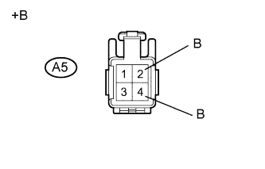
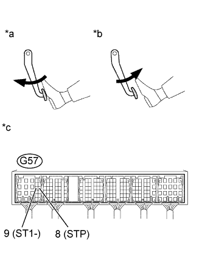

DTC P0504 Корреляция сигналов выключателей тормоза "A"/"B" |
| Сигналы | Педаль тормоза отпущена | Промежуточное состояние | Педаль тормоза нажата |
| STP | OFF (ВЫКЛ) | ON (ВКЛ) | ON (ВКЛ) |
| ST1- | ON (ВКЛ) | ON (ВКЛ) | OFF (ВЫКЛ) |
| Режим поездки при обнаружении DTC | Условие обнаружения DTC | Неисправный участок |
| Нажмите и отпустите педаль тормоза при включенном зажигании (IG) | Условия (a), (b) и (c) сохраняются более 0,5 с (логика диагностирования за 1 поездку): (а) Зажигание включено (IG). (b) Педаль тормоза отпущена. (c) Сигнал STP в состоянии OFF (ВЫКЛ) , если сигнал ST1- также в состоянии OFF (ВЫКЛ), или сигнал STP в состоянии ON (ВКЛ), если сигнал ST1- также в состоянии ON (ВКЛ). |
|
| № DTC | Параметры из Data List |
| P0504 | Stop Light Switch |
| Состояние педали тормоза | Заданные условия |
| Нажата | ON (ВКЛ) |
| Отпущена | OFF (ВЫКЛ) |
| 1.ПРОВЕРЬТЕ ВЫКЛЮЧАТЕЛЬ СТОП-СИГНАЛОВ (НАПРЯЖЕНИЕ НА КОНТАКТЕ В) |
|  |
Отсоедините разъем выключателя стоп-сигналов.
Измерьте напряжение в соответствии со значениями, приведенными в таблице.
| Контакты для подключения диагностического прибора | Условие | Заданные условия |
| A5-2 - масса | Всегда | 11 – 14 В |
| A5-4 - масса | Выключатель зажигания в состоянии ON (ВКЛ) (IG) | 11 - 14 В |
| *a | Вид спереди разъема со стороны жгута проводов: (к выключателю стоп-сигналов) |
Подсоедините разъем выключателя стоп-сигналов.
|
| ||||
| OK | |
| 2.ПРОВЕРЬТЕ ВЫКЛЮЧАТЕЛЬ СТОП-СИГНАЛОВ В СБОРЕ |
Проверьте выключатель стоп-сигналов в сборе (Нажмите здесь).
|
| ||||
| OK | |
| 3.ПРОВЕРЬТЕ ECM (STP И ST1 - НАПРЯЖЕНИЕ) |
|  |
Отсоедините разъем ЭБУ.
Включите зажигание (IG).
Измерьте напряжение в соответствии со значениями, приведенными в таблице.
| Контакты для подключения диагностического прибора | Состояние педали тормоза | Заданные условия |
| G57-9 (ST1-) - масса | Отпущена | 11 - 14 В |
| Нажата | 0 - 3 В | |
| G57-8 (STP) - масса | Отпущена | 0 - 3 В |
| Нажата | 11 - 14 В |
| *a | Педаль тормоза нажата |
| *b | Педаль тормоза отпущена |
| *c | Устройство с подсоединенным жгутом проводов (ECM) |
Подсоедините разъем ECM.
|
| ||||
|
| ||||
| 4.ЗАМЕНИТЕ ВЫКЛЮЧАТЕЛЬ СТОП-СИГНАЛОВ В СБОРЕ |
Замените выключатель стоп-сигналов в сборе (Нажмите здесь).
|
| ||||
| 5.ЗАМЕНИТЕ ECM |
Замените ECM (Нажмите здесь).
|
| ||||
| 6.ОТРЕМОНТИРУЙТЕ ИЛИ ЗАМЕНИТЕ ЖГУТ ПРОВОДОВ ИЛИ РАЗЪЕМ |
Отремонтируйте или замените жгут проводов или разъем.
| ДАЛЕЕ | |
| 7.ПРОВЕРЬТЕ, УСТРАНЕНА ЛИ ДОЛЖНЫМ ОБРАЗОМ НЕИСПРАВНОСТЬ |
Подсоедините портативный диагностический прибор к DLC3.
Удалите коды DTC (Нажмите здесь).
Выключите зажигание.
Включите зажигание (IG) и портативный диагностический прибор.
Нажмите и отпустите педаль тормоза.
Войдите в следующие меню: Powertrain / Engine and ECT / DTC.
Убедитесь, что DTC не выводится снова.
| ДАЛЕЕ | ||
| ||